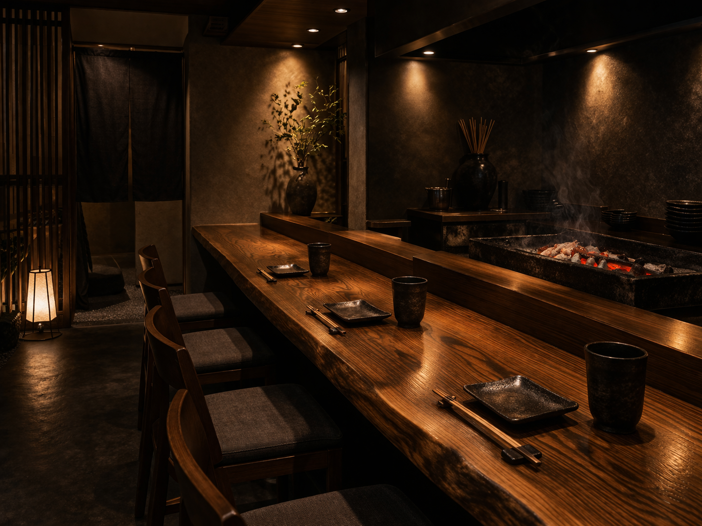
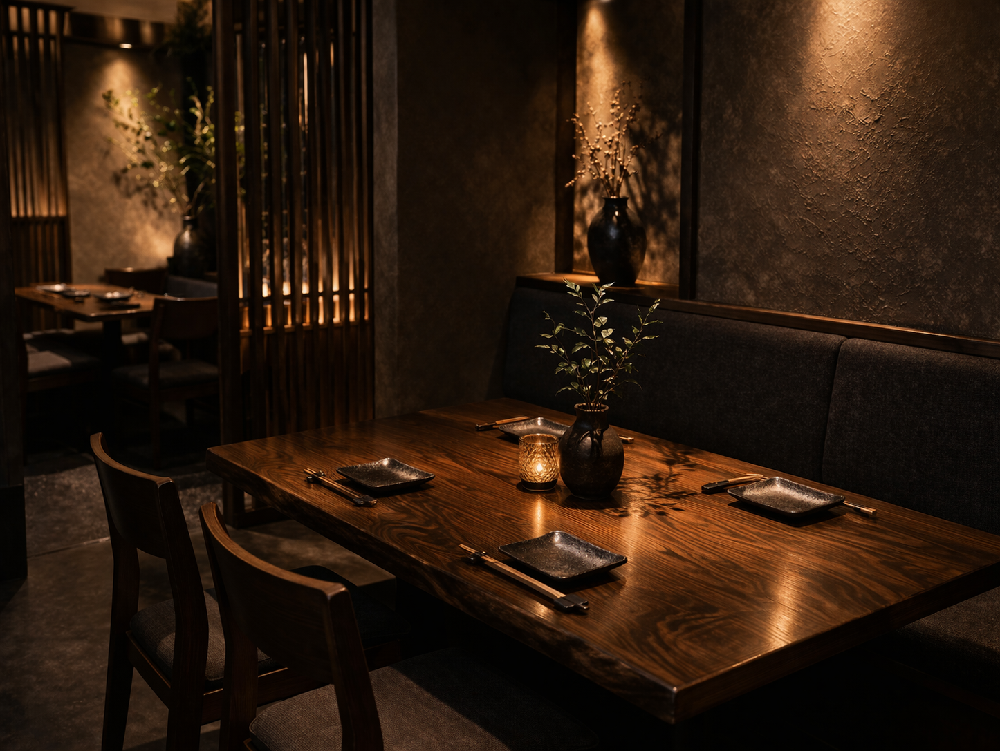
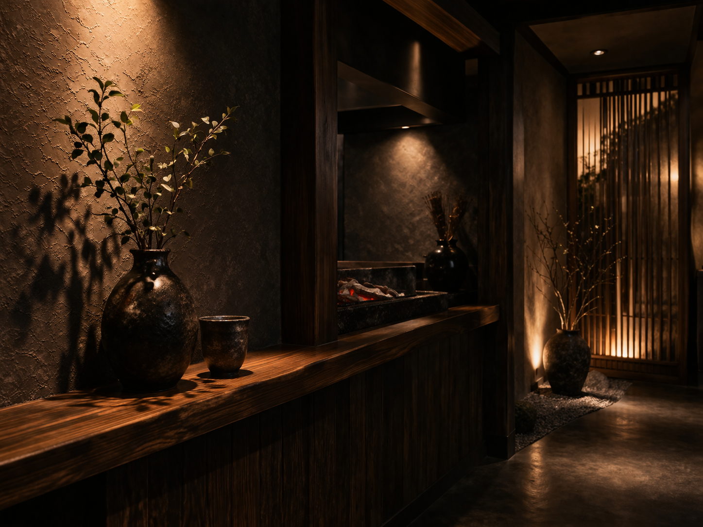

炭火串焼き
一本一本、絶妙な火入れで
厳選した鶏肉を、香ばしい炭の香りを纏わせながら焼き上げます。部位ごとの旨味を引き出す塩と、継ぎ足しのタレでご堪能ください。
炭火やきとり れめどら
一本ずつ丁寧に焼き上げる炭火串焼きと、
こだわりの一品料理。
明石の路地に佇む、炭火焼き鳥の専門店。
一本一本、職人が丁寧に焼き上げる串と、厳選された地酒で、静かな夜のひとときをお届けします。
一本一本、絶妙な火入れで
厳選した鶏肉を、香ばしい炭の香りを纏わせながら焼き上げます。部位ごとの旨味を引き出す塩と、継ぎ足しのタレでご堪能ください。

ふっくらとジューシーな手ごねつくねや、旬の素材を活かした一品。

焼き鳥の旨味をより深く引き立てる全国各地の地酒や焼酎。
厳選した炭を用い、職人が一本一本、絶妙な火入れで焼き上げます。香ばしさと旨味を閉じ込めた串をご堪能ください。
喧騒から離れた和のしつらえ。大切な方との語らいや、静かに食事と向き合いたい夜にふさわしい、大人のための空間です。
一枚板のカウンター席では、焼き上がる音と香りもご馳走に。ご自身のペースで、気負わずゆっくりと美酒佳肴をお楽しみいただけます。
一枚板のカウンターと、静かな時が流れる店内。
お一人様でも、大切な方とも。



| 営業時間 | 17:00 〜 23:00お食事 L.O. 22:00 / お飲み物 L.O. 22:30 |
|---|---|
| 定休日 | 日曜日・第2月曜日 |
| 対応エリア | 明石市・神戸市西区・加古川市 周辺 |
| お電話 | 078-000-0000 |
〒673-0000 兵庫県明石市〇〇町1-2-3
各線「明石駅」より徒歩3分